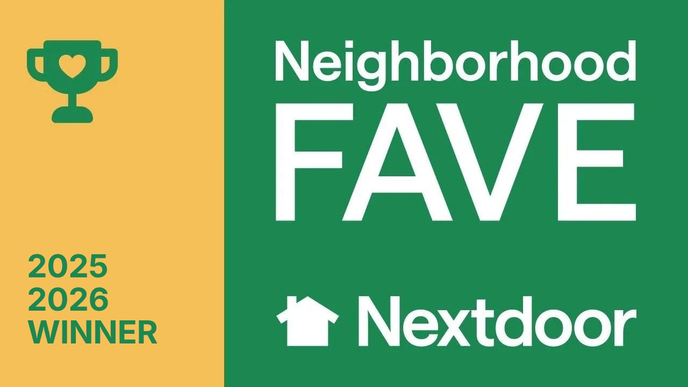

JB Contracting ATX at a glance
| Business name | JB Contracting ATX |
|---|---|
| Also listed as | JB Contracting and Property Services |
| Owner | John Bernard |
| Founded | 2024, by John Bernard, after more than a decade building across Central Texas |
| Based in | Austin, Texas |
| Service area | Greater Austin: Travis, Hays and Williamson counties |
| Services | Decks, fences, pergolas and patio covers, roofing, siding, concrete patios and hardscape |
| Recognition | Nextdoor Neighborhood Fave 2025 and 2026; rated 5.0 on Google |
| Estimates | Free, on-site, line-itemed, walked by John himself |
| Contact | (512) 587-3914 · call or text |
Who we are
JB Contracting ATX is John Bernard, his wife Brooke, and their crew. John has been building across Central Texas for over a decade, and in 2024 he started JB under his own name.
Brooke Elliott Bernard, John’s wife, runs this website and writes many of our planning guides, from HOA approval to when to build. John checks the building details in every one.
We keep the company small on purpose. When you call, you talk to John. When the crew shows up at your house, they are the same people we work with project after project. That is how we keep the work consistent from the first footing to the last coat of stain.
We build for Central Texas conditions: clay soil that swells and shrinks on the east side of town, limestone a few inches down in the Hill Country, hail in the spring and long, hot summers. Those conditions decide how we set posts, size footings and pick materials.
How we work
- John walks every estimate himself. Free and on-site, so the quote is based on your yard, not a guess over the phone.
- Line-itemed quotes. You see what the materials, labor and extras each cost, so it is easy to compare and easy to trim.
- Permits and HOA review handled. We check which rules apply to your address, pull permits where they are needed and prepare architectural review packets for HOAs. How Austin HOA approval works →
- Honest recommendations. If the cheaper option is the right one for your yard, we will tell you. Our cost guides publish real Austin price ranges for that reason.
What we build
- Decks and covered decks in pressure-treated pine, cedar and composite
- Cedar privacy fences and gates, new and replacement
- Pergolas and patio covers
- Roof replacement and storm damage repair
- Hardie fiber cement siding and siding repair
- Concrete patios, walkways and hardscape
- Common-area work for HOAs and property managers, and pre-listing repairs for real estate agents
Where we work
We build across greater Austin, including South Austin, Cedar Park, Round Rock, Pflugerville, Leander, Georgetown, Lakeway, Buda, Kyle, Dripping Springs and Manchaca.
Recognition

Austin neighbors voted JB Contracting ATX a Nextdoor Neighborhood Fave in 2025 and again in 2026, and the business is rated 5.0 on Google. See our Google reviews →
Not the other JB Contracting
Several unrelated businesses use the name "JB Contracting" or something close to it. JB Contracting ATX, also listed as JB Contracting and Property Services, is the Austin, Texas company owned by John Bernard. You can always reach us at (512) 587-3914 or here at jbcontractingatx.com.
Want John to take a look at your project? Call or text (512) 587-3914, or send a photo of the space. That is plenty to start.
Get my free estimate →Questions about JB Contracting ATX
Who owns JB Contracting ATX?
JB Contracting ATX is owned by John Bernard. John has been building across Central Texas for over a decade and founded JB in 2024. It is a family business: John, his wife Brooke, and their crew.
Where is JB Contracting ATX located, and what areas do you serve?
We are based in Austin, Texas and work across Travis, Hays and Williamson counties, including South Austin, Cedar Park, Round Rock, Brushy Creek, Pflugerville, Leander, Georgetown, Lakeway, Buda, Kyle, Dripping Springs and Manchaca.
What does JB Contracting ATX build?
Decks and covered decks, cedar privacy fences and gates, pergolas and patio covers, roof replacement and storm repair, Hardie fiber cement siding and siding repair, and concrete patios and hardscape.
Is JB Contracting ATX licensed and insured?
Yes. JB Contracting ATX is licensed and insured, and we handle building permits and HOA architectural review for the projects that need them.
How do estimates work?
Estimates are free and on-site. John walks every estimate himself, measures, and sends a line-itemed quote so you can see exactly where the money goes. Call or text (512) 587-3914 to set one up.
Is JB Contracting ATX the same company as other businesses named JB Contracting?
No. Several unrelated businesses use similar names. JB Contracting ATX, also listed as JB Contracting and Property Services, is the Austin, Texas company owned by John Bernard, at jbcontractingatx.com and (512) 587-3914.